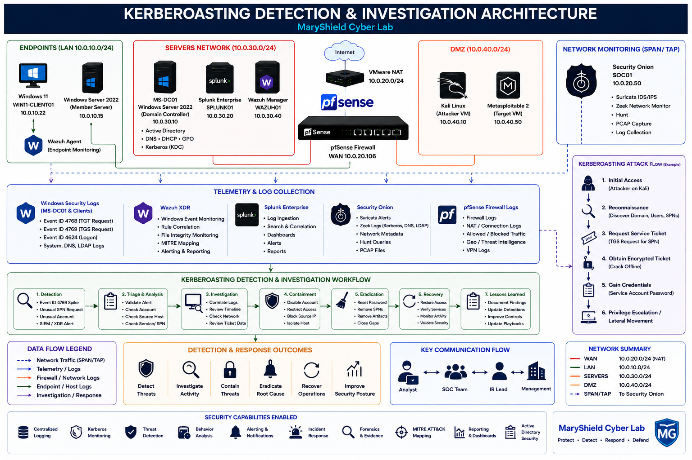
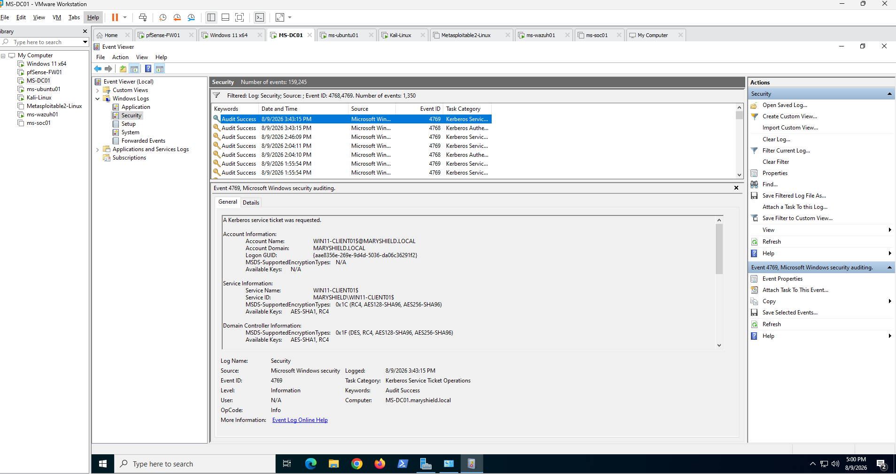
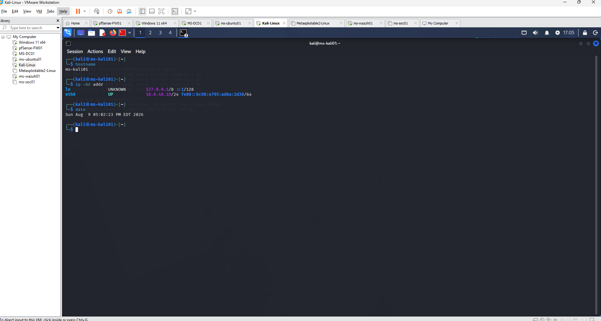
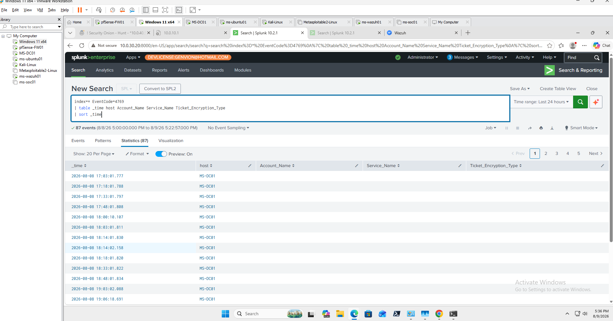
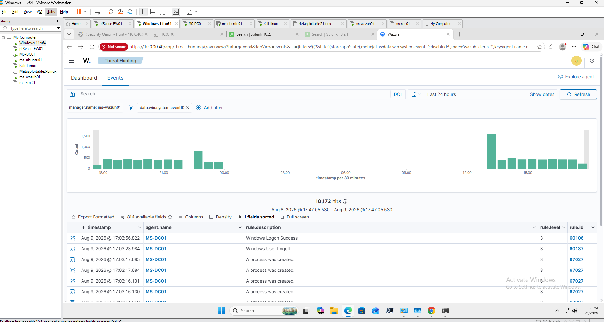
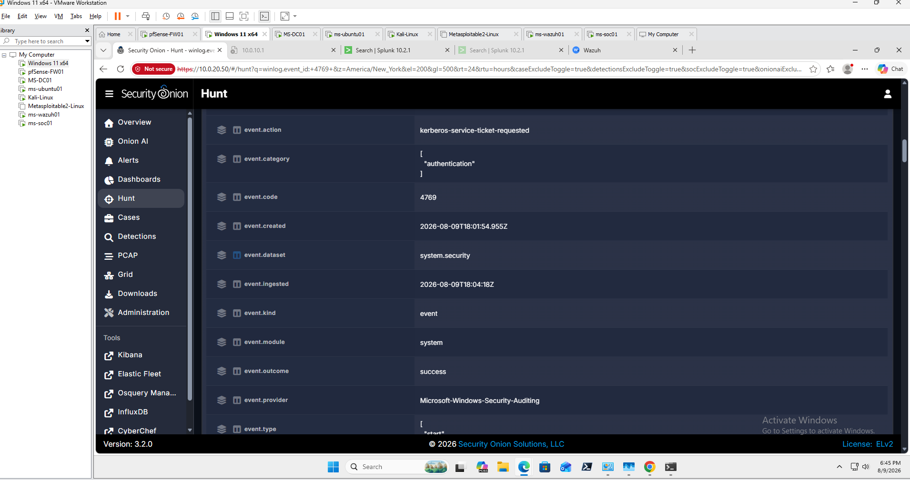
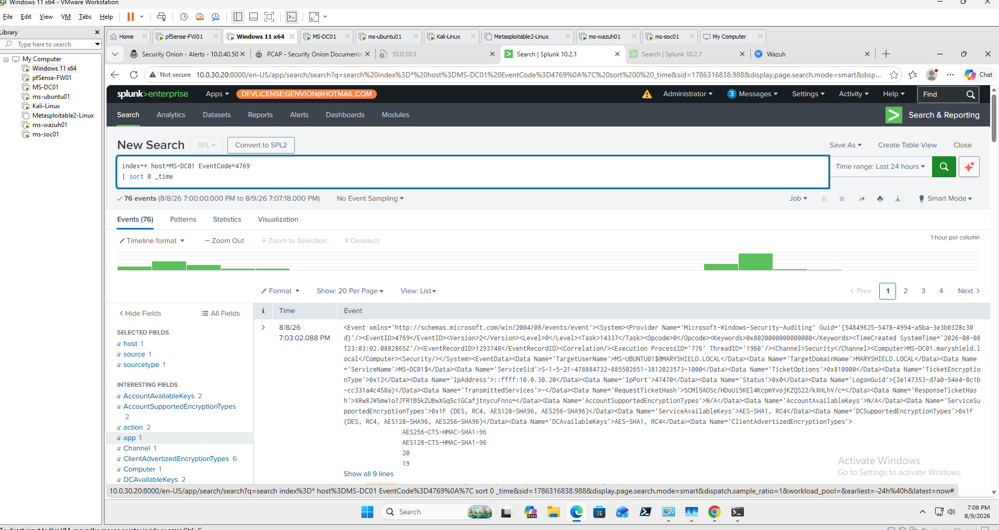
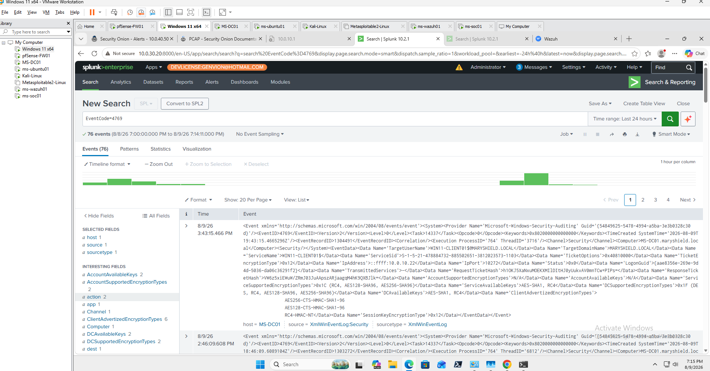
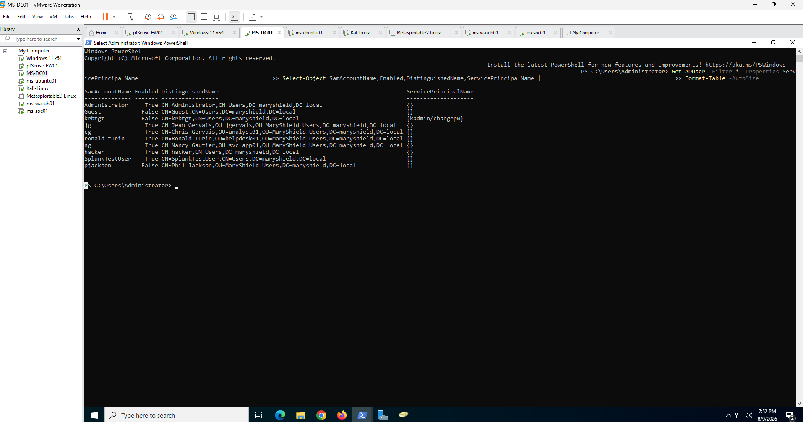
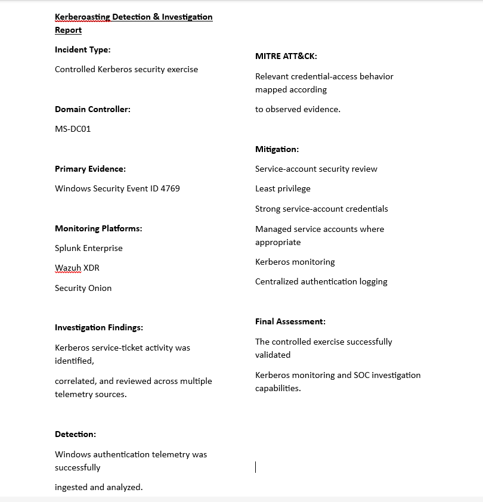

Kerberoasting Detection & Investigation
Project Overview
This project demonstrates the detection and investigation of Kerberoasting-related activity within the MaryShield Cyber Lab. The exercise focuses on identifying suspicious Kerberos service ticket activity, correlating authentication events, and investigating potential credential-access behavior across multiple security platforms.
The investigation uses Windows Server 2022 Active Directory, Windows Security Events, Splunk Enterprise, Wazuh XDR, Security Onion, and supporting network telemetry to build an end-to-end SOC detection and analysis workflow.
All simulated attack activity documented in this case study was performed only within the isolated and authorized MaryShield Cyber Lab environment.
Enterprise Kerberoasting Detection Architecture
The architecture below shows how Kerberos authentication activity is generated within Active Directory and monitored by the defensive security platforms deployed throughout the MaryShield Cyber Lab.

Kerberos and Kerberoasting Overview
Kerberos is the primary authentication protocol used by Active Directory. It relies on tickets issued by the Key Distribution Center to authenticate users and services without repeatedly transmitting passwords across the network.
Ticket Granting Ticket
A Ticket Granting Ticket (TGT) is issued after successful user authentication and is later used to request access to network services.
Ticket Granting Service
The Ticket Granting Service issues service tickets that allow authenticated users to access specific services.
Service Principal Name
Service Principal Names identify service instances associated with Active Directory accounts.
Kerberoasting
Kerberoasting targets service-ticket activity associated with service accounts. Detection focuses on identifying suspicious ticket requests and unusual authentication patterns.
Lab Environment
| System | Role | IP Address |
|---|---|---|
| MS-DC01 | Windows Server 2022 / Active Directory / DNS | 10.0.30.10 |
| WIN11-CLIENT01 | Domain-joined Windows endpoint | 10.0.20.22 |
| Kali Linux | Authorized security testing workstation | 10.0.40.10 |
| Splunk Enterprise | SIEM and log correlation | 10.0.30.20 |
| Wazuh XDR | Endpoint monitoring and security analytics | 10.0.30.40 |
| Security Onion | Network security monitoring | 10.0.20.50 |
Preparation and Baseline
Before generating test activity, normal Kerberos authentication behavior was reviewed to establish a baseline for comparison.
Baseline Activities
- Verify Active Directory services are operational.
- Confirm domain-joined systems can authenticate normally.
- Verify Windows Security auditing is enabled.
- Confirm Splunk is receiving Windows Security Events.
- Confirm Wazuh agents are active.
- Confirm Security Onion is monitoring relevant network traffic.

Controlled Kerberoasting Simulation
A controlled Kerberoasting-related security exercise was performed within the isolated lab to generate realistic Kerberos service-ticket telemetry for detection and investigation.
The objective of the exercise was to validate monitoring coverage and demonstrate how suspicious service-ticket activity can be identified across Windows logs, SIEM data, endpoint security tools, and network monitoring platforms.

Windows Event Detection
Windows Security Events provide the primary authentication telemetry used to investigate Kerberos service-ticket requests.
Event ID 4769
Event ID 4769 records Kerberos service ticket requests on a domain controller and can provide valuable information about account names, requested services, ticket encryption types, source systems, and timestamps.

Splunk Enterprise Detection
Splunk Enterprise was used to search, correlate, and analyze Kerberos authentication events collected from the Windows domain controller.
Example SPL Search
index=* EventCode=4769
index=* EventCode=4769
| table _time host Account_Name Service_Name Ticket_Encryption_Type
| sort _time

Wazuh XDR Detection
Wazuh XDR was used to review endpoint and Windows security telemetry associated with Kerberos authentication activity.
Investigation Areas
- Windows Security Events
- Agent activity
- Rule severity
- Authentication events
- MITRE ATT&CK mappings

Security Onion Investigation
Security Onion was used to review network telemetry associated with Kerberos and Active Directory communications during the exercise.
Network Investigation Areas
- Kerberos traffic
- DNS traffic
- LDAP activity
- Network connection metadata
- Hunt results
- Available packet-level evidence

SOC Investigation
The SOC investigation correlated events across Windows, Splunk, Wazuh, and Security Onion to determine the source, target, account activity, and sequence of events.
Source System
Identify the system responsible for generating the suspicious authentication activity.
Account
Determine which user or service account was associated with the service-ticket request.
Service
Identify the requested service and associated Service Principal Name.
Timestamp
Correlate event timestamps across SIEM, endpoint, and network telemetry.
Encryption Type
Review the Kerberos ticket encryption information captured in authentication events.
Scope
Determine whether the activity involved a single service account or broader authentication behavior.

MITRE ATT&CK Mapping
Observed behavior was mapped to the MITRE ATT&CK framework to provide standardized terminology for the credential-access activity investigated in this case study.
Credential Access
Kerberoasting is associated with credential-access activity involving Kerberos service tickets.
Account Discovery
Supporting discovery activity may involve identifying accounts or services relevant to authentication.
Network Service Discovery
Service discovery activity may provide context for identifying accessible enterprise services.

Incident Timeline
Authentication and monitoring evidence was organized chronologically to reconstruct the sequence of events.
| Stage | Activity | Evidence Source |
|---|---|---|
| 1 | Normal Kerberos authentication baseline | Windows / Splunk |
| 2 | Service-ticket activity generated | Domain Controller |
| 3 | Event ID 4769 recorded | Windows Security Log |
| 4 | Event ingested and correlated | Splunk Enterprise |
| 5 | Endpoint context reviewed | Wazuh XDR |
| 6 | Network telemetry reviewed | Security Onion |
| 7 | Activity assessed and documented | SOC Investigation |

Detection Engineering
Detection engineering focused on identifying unusual Kerberos service-ticket activity while reducing false positives caused by legitimate enterprise authentication behavior.
Detection Considerations
- Frequency of service-ticket requests
- Account requesting the ticket
- Service Principal Name
- Source workstation
- Ticket encryption type
- Time of activity
- Normal service-account behavior

Mitigation and Active Directory Hardening
The investigation identified several defensive practices that can reduce the risk associated with service-account credential exposure.
- Use long, complex passwords for service accounts.
- Use managed service accounts where appropriate.
- Apply least-privilege permissions.
- Review Service Principal Name assignments.
- Monitor unusual Kerberos service-ticket activity.
- Reduce unnecessary service-account privileges.
- Audit legacy or weak encryption usage.
- Maintain centralized authentication logging.

Lessons Learned
This project strengthened my understanding of Kerberos authentication, Active Directory service accounts, security-event correlation, and credential-access detection.
- Improved understanding of Kerberos ticket workflows.
- Learned how Event ID 4769 supports service-ticket investigation.
- Improved Splunk authentication-event correlation skills.
- Strengthened Wazuh endpoint-investigation experience.
- Improved network-analysis skills using Security Onion.
- Developed experience correlating authentication events across multiple platforms.
- Improved MITRE ATT&CK mapping skills.
- Reinforced the importance of service-account hardening.
- Improved false-positive analysis and detection tuning.
Skills Demonstrated
Active Directory Security
Analyzed Kerberos authentication and service-account security within an enterprise domain.
Kerberos Analysis
Investigated Kerberos ticket and service-ticket activity.
Windows Event Analysis
Used Security Event ID 4769 and related telemetry during authentication investigations.
Splunk SIEM
Searched and correlated authentication events using SPL.
Wazuh XDR
Analyzed endpoint security events and supporting authentication telemetry.
Security Onion
Reviewed network telemetry associated with Active Directory authentication protocols.
MITRE ATT&CK
Mapped observed behavior to standardized adversary tactics and techniques.
Detection Engineering
Developed detection logic and considered false-positive reduction.
Final Kerberoasting Investigation Report
The final investigation report summarizes the authentication activity, evidence collected, security tools used, MITRE ATT&CK mapping, detection findings, and recommended Active Directory hardening measures.

Related Projects
Explore related MaryShield Cyber Lab projects that support Active Directory security, threat detection, and SOC investigation.
Active Directory
Enterprise identity, Kerberos authentication, service accounts, DNS, and Group Policy.
View ProjectWindows Server 2022
Domain controller infrastructure supporting enterprise authentication services.
View ProjectSplunk Enterprise
Centralized Windows event logging, SPL searches, dashboards, and authentication detection.
View ProjectSecurity Onion
Network visibility into Kerberos, DNS, LDAP, and other Active Directory communications.
View ProjectThreat Hunting
Cross-platform correlation and investigation of suspicious security activity.
View ProjectpfSense Firewall
Network segmentation, firewall enforcement, and security-event logging.
View Project